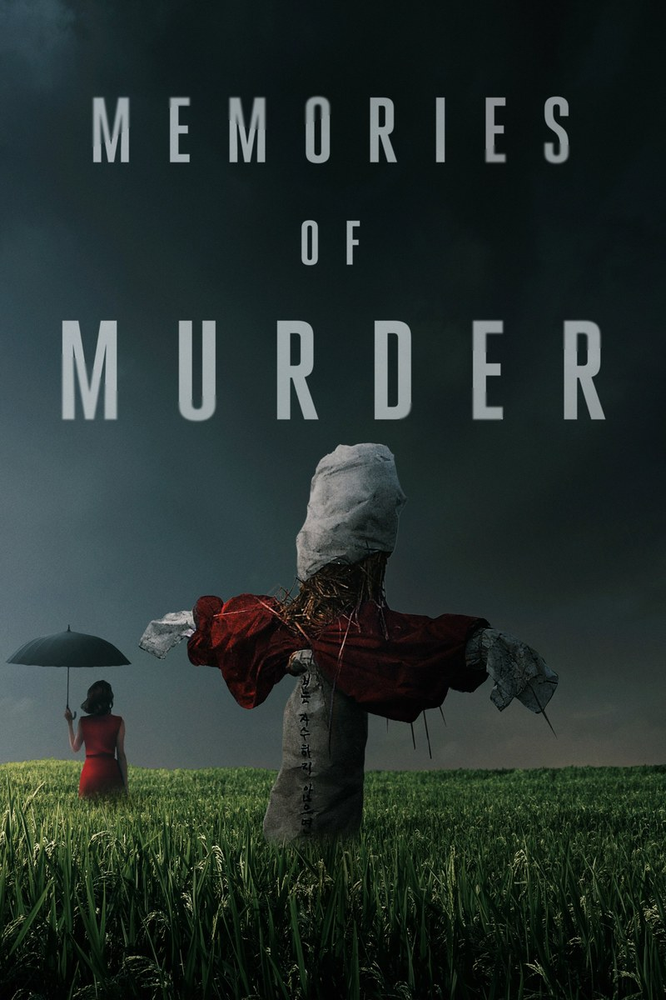

Fiche technique
| Titre | Memories of Murder (Salinui chueok / 살인의 추억) |
| Réalisation | Bong Joon-ho |
| Scénario | Bong Joon-ho et Shim Sung-bo, d'après la pièce Come to See Me (1996) de Kim Kwang-lim[1] |
| Photographie | Kim Hyung-koo (35 mm, 1.85:1)[1][3] |
| Montage | Kim Sun-min |
| Musique | Taro Iwashiro |
| Interprétation | Song Kang-ho (Park Doo-man), Kim Sang-kyung (Seo Tae-yoon), Kim Roi-ha, Park Hae-il, Park No-shik, Jeon Mi-seon |
| Durée | 131 minutes |
| Sortie | 2 mai 2003 (Corée du Sud) ; 23 juin 2004 (France)[1][6] |
| Récompenses | Grand Bell Awards 2003 : meilleur film, meilleure réalisation, meilleur acteur (Song Kang-ho) ; Coquille d'argent de la meilleure réalisation, San Sebastián 2003[1] |

Synopsis
Octobre 1986, dans une province rurale au sud de Séoul. Le corps d'une jeune femme est découvert dans un fossé d'irrigation, au bord des rizières. D'autres suivront : même mode opératoire, mêmes nuits de pluie. L'inspecteur local Park Doo-man, qui se vante de reconnaître un coupable à l'œil nu, mène l'enquête à sa manière — aveux extorqués, suspects commodes, procès-verbaux arrangés — jusqu'à l'arrivée de Seo Tae-yoon, jeune inspecteur de Séoul venu volontairement prêter main-forte, qui ne croit qu'aux documents et aux faits. Autour d'eux, un commissariat démuni, un pays sous régime autoritaire, et un tueur qui frappe toujours quand il pleut — après qu'une même chanson a été demandée à la radio locale[7]. L'enquête s'enlise, les méthodes des deux hommes se contaminent l'une l'autre, et le dossier — comme l'affaire réelle qui l'inspire — reste ouvert.
Contexte de production
Le film adapte la première affaire de meurtres en série reconnue de Corée du Sud : entre octobre 1986 et avril 1991, dix femmes et jeunes filles furent violées et assassinées dans la région de Hwaseong, à une quarantaine de kilomètres de Séoul[1][2]. L'enquête réelle prit une démesure nationale : plus de 20 000 personnes interrogées, quelque deux millions de jours-homme — près de 5 500 années cumulées —, et un innocent, Yoon Seong-yeo, condamné pour l'un des meurtres, qui ne sera rejugé et lavé qu'en 2020[8]. Bong Joon-ho découvre l'affaire lycéen, et dit en être resté hanté ; il en reprend la matière à travers la pièce de théâtre Come to See Me de Kim Kwang-lim (1996), co-écrit le scénario avec Shim Sung-bo, compresse la chronologie et change les noms — mais conserve des détails authentiques de l'enquête, jusqu'à la méthode de ligature des victimes[2].
Deuxième long métrage de Bong après Barking Dogs Never Bite (2000), le film est produit pour un budget modeste (environ 2,8 millions de dollars)[1]. Le tournage recrée la Corée rurale de 1986 — celle du régime militaire de Chun Doo-hwan, des exercices de défense civile qui plongent les villes dans le noir et des brigades anti-émeute mobilisées contre les manifestations plutôt que pour protéger les habitantes[4][6]. L'affaire réelle, elle, ne sera résolue qu'en 2019, seize ans après le film : identifié par son ADN, Lee Chun-jae, déjà incarcéré pour un meurtre de 1994, avouera quatorze meurtres et plus de trente viols[2]. Interrogé lors de cette arrestation, Bong saluera le travail des enquêteurs — en refusant que son film s'en attribue le mérite[2].
Structure narrative
Le récit épouse la forme du dossier d'instruction : une succession de pistes numérotées — trois suspects successifs, chacun plus plausible que le précédent — qui toutes s'effondrent. Cette structure par épuisement est le contraire du récit policier classique : au lieu de converger vers une révélation, l'enquête diverge, et chaque certitude détruite coûte davantage aux enquêteurs. Bong y greffe une temporalité politique précise : les meurtres surviennent quand l'État regarde ailleurs — le soir d'un exercice de défense passive, la nuit où les renforts sont partis mater une manifestation[4].
Un épilogue déplace enfin le récit en 2003 : Park, reconverti dans le commerce, repasse par le fossé du premier crime. Une fillette lui apprend qu'un homme « au visage ordinaire » est venu récemment regarder au même endroit, « en souvenir de quelque chose qu'il avait fait là, il y a longtemps »[1]. Ce saut temporel transforme rétroactivement tout le film en mémoire — c'est le titre même — et prépare l'un des derniers plans les plus commentés du cinéma contemporain.
Mise en scène et procédés techniques
La photographie de Kim Hyung-koo (35 mm, 1.85:1) refuse le poli du « film noir » : lumière naturaliste motivée — néons blafards du commissariat, ampoule nue de la cave aux interrogatoires, jours couverts — et palette de terre, boue, ocre et gris, où le rouge des vêtements des victimes reste le seul éclat[3][5]. Le prologue condense la méthode en trois minutes : un garçon capture une sauterelle dans un bocal au bord d'un champ de riz doré — le « bocal à tuer » de l'entomologiste qui donne son titre à l'essai d'Ed Park —, l'inspecteur Park arrive en tracteur, ébouriffe les cheveux de l'enfant, puis oriente un éclat de miroir vers le fossé : le corps apparaît, et une sauterelle s'accroche à la jambe de la victime — détail que Park qualifie de « nabokovien », sceau discret d'un cinéaste qui dissimule ses motifs sous le chaos apparent[8]. La sécurité dorée du plan initial se retourne en menace[5].
La caméra alterne deux régimes : plans larges et fixes qui réduisent les enquêteurs à de petites silhouettes impuissantes dans le paysage, et caméra portée qui surgit avec le chaos — scènes de crime piétinées par les curieux et les tracteurs, interrogatoires qui dégénèrent[3][5]. Bong tient les plans au-delà du confort, refusant la coupe qui soulagerait[5] ; et il orchestre des bascules de ton devenues sa signature — burlesque, suspense et violence dans une même séquence — que la critique française décrira comme un art d'osciller « entre inquiétude, incrédulité et désespoir »[6]. La violence graphique, elle, est presque toujours éludée au profit des « violences normalisées, légales » : la brutalité des gardes à vue, la répression d'État[6].
Personnages principaux
Park Doo-man (Song Kang-ho)
Flic de province qui prétend lire la culpabilité dans les yeux — ses « yeux de chaman », moqués par son collègue de Séoul[4]. Fabricant de preuves, tortionnaire par routine plus que par cruauté, il est aussi le personnage le plus humain du film : Song Kang-ho lui donne une épaisseur comique et désarmée qui rend son échec final bouleversant plutôt que mérité.
Seo Tae-yoon (Kim Sang-kyung)
L'inspecteur venu de Séoul, méthodique, qui « ne croit que les documents ». Son arc est le miroir inversé de celui de Park : à mesure que les pistes s'effondrent, le rationnel glisse vers l'obsession, jusqu'à la scène du tunnel où, un rapport ADN négatif entre les mains, il est prêt à exécuter un suspect que rien ne confond plus. Les deux méthodes — l'intuition et le document — échouent ensemble : c'est le cœur du film[4].
Les figures du système
Autour d'eux, Bong dessine un état des lieux : l'inspecteur Jo (Kim Roi-ha), le « ça » du trio, qui enfile un couvre-chaussure avant de piétiner les suspects[8] ; l'officier Kwon, seule femme du commissariat, cantonnée au thé et aux procès-verbaux, qui découvre pourtant l'indice le plus sérieux — la chanson demandée à la radio les soirs de meurtre[7] ; et les suspects sacrifiés : Baek Kwang-ho, simple d'esprit à qui l'on fait réciter des aveux appris par cœur — figure inspirée en partie de Yoon Seong-yeo, l'innocent réellement condamné[8] —, puis deux hommes qui portent, ironie voulue, les mêmes noms que leurs poursuivants : le tueur échappe à la capture et laisse derrière lui « une paire de doubles, tous coupables de quelque chose »[8].
Thèmes
L'échec comme sujet
Le film est un polar dont le crime ne sera pas résolu — et qui le sait. L'enquête n'y est pas un chemin vers la vérité mais la chronique d'une impuissance : preuves détruites par négligence, aveux fabriqués qui contaminent tout, et ce trait qui résume l'époque — faute de laboratoire national, l'analyse ADN doit partir à l'étranger (aux États-Unis dans le film[8] ; au Japon dans l'affaire réelle[1]) : « l'emblème d'un pays incapable, littéralement, de s'analyser lui-même », écrit Ed Park[8]. L'« inconnaissance » est la vraie matière du récit[4].
Le monstre et le système
1986 : l'état d'urgence permanent, les sirènes, les couvre-feux. Bong suggère méthodiquement que le tueur prospère dans les angles morts d'un État policié occupé à se protéger lui-même plutôt qu'à protéger les siens — la critique française ira jusqu'à lire dans le monstre « un pur produit du système »[6]. La satire n'est jamais un à-côté : elle est la condition de possibilité des meurtres.
La banalité du visage
« Un visage ordinaire » : c'est tout ce que le film concède de son tueur, et c'est son geste le plus radical. Ni figure, ni psychologie, ni scène du crime en son point de vue — le mal reste un homme quelconque, fondu dans la population. D'où la force du dernier plan : Park scrutant la caméra, c'est-à-dire nous, foule de visages ordinaires où le coupable, peut-être, regarde[4].
La mémoire comme blessure
Le titre ne promet pas des meurtres mais leur souvenir. L'épilogue de 2003 fait du film un acte de mémoire nationale — garder l'affaire ouverte dans la conscience publique quand la justice l'a laissée prescrire. L'histoire donnera au geste une portée inattendue : l'identification du vrai coupable en 2019 rouvrira le dossier que le film avait tenu entrouvert seize ans[2].
Réception critique et postérité
Triomphe public en Corée — plus de 5,1 millions d'entrées, meilleur score national de 2003[1] — le film rafle les Grand Bell Awards (film, réalisation, acteur) et vaut à Bong la Coquille d'argent de la meilleure réalisation à San Sebastián[1]. Sorti en France le 23 juin 2004, il s'impose, aux côtés d'Old Boy de Park Chan-wook, comme l'étendard de la nouvelle vague sud-coréenne[6].
Sa stature n'a fait que croître : ressortie restaurée en 4K supervisée par Kim Hyung-koo[5], édition Criterion, comparaisons récurrentes avec Zodiac de David Fincher — l'autre grand film d'enquête sans résolution — et présence durable dans les listes des meilleurs films du siècle[1]. Quand Parasite consacre Bong en 2019-2020, la critique mondiale relit Memories of Murder comme la matrice de son œuvre : mélange des tons, satire des institutions, empathie pour les perdants du système.
Conclusion
Memories of Murder réussit ce que presque aucun polar n'ose : faire de l'échec de l'enquête non pas une frustration mais la révélation elle-même. Ce que le film élucide, ce n'est pas l'identité d'un tueur — c'est l'état d'un pays : une Corée de 1986 où la police sait torturer mais pas protéger, où les projecteurs servent aux couvre-feux plutôt qu'aux battues, où la vérité d'un crime exige un laboratoire étranger. La boue des rizières y est une matière morale autant que plastique : tout le monde s'y enfonce, enquêteurs compris.
Et puis il y a ce dernier plan — Song Kang-ho face caméra, les yeux qui nous fouillent. Bong a conçu ce regard pour le jour où, peut-être, le vrai coupable verrait le film ; le destin a voulu qu'en 2019 l'homme soit identifié — et l'on apprit qu'il avait effectivement vu le film en détention. « Je n'ai rien ressenti en le regardant », déclara-t-il aux enquêteurs[8]. Rarement un plan de cinéma aura si littéralement atteint son destinataire — et si complètement échoué à l'atteindre : la question d'Ed Park reste ouverte, « peut-on encore regarder ce film de la même façon ? »[8]. C'est la mesure du film : un procès-verbal devenu œuvre, un dossier classé sans suite devenu mémoire collective — et, pour qui découvre Bong Joon-ho par Parasite, la preuve que tout y était déjà, dès 2003, sous la pluie.
Sources
- Wikipedia (EN), « Memories of Murder » — fiche, production, distinctions, affaire de Hwaseong. Consulté le 3 août 2026.
- Little White Lies, « The unexpected closure of Bong Joon-ho's Memories of Murder » — identification de Lee Chun-jae (2019), réaction de Bong. Consulté le 3 août 2026.
- Shot.cafe, photogrammes de Kim Hyung-koo — repérage visuel (cadres, palette). Consulté le 3 août 2026.
- Bruno Alves, « The Not Knowing », Bright Wall/Dark Room n° 86 — l'inconnaissance, les deux méthodes, le regard final. Consulté le 3 août 2026.
- Color Culture, « Memories of Murder (2003): Cinematography Analysis » — palette, lumière motivée, régimes de caméra. Consulté le 3 août 2026.
- Culturopoing, « Bong Joon-ho — Memories of Murder » — réception française, mélange des tons, lecture politique. Consulté le 3 août 2026.
- Antti Alanen, Film Diary, notes sur la version restaurée 2017 — la chanson « Sad Letter » demandée à la radio, indice de l'officier Kwon. Consulté le 3 août 2026.
- Ed Park, « Memories of Murder: In the Killing Jar », The Criterion Collection, 20 avril 2021 — l'enquête réelle en chiffres, Yoon Seong-yeo, le prologue au bocal, les suspects-doubles, le rapport américano-coréen, « je n'ai rien ressenti ». Consulté le 3 août 2026 (accès web initialement refusé — document récupéré manuellement par l'éditeur du site).